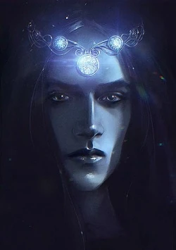
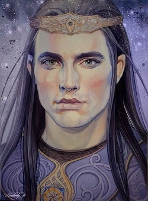

Ñoldor'un gelişini öğrenen Morgoth, ordularını Angband kalesinden çağırdı ve Fëanor'un Mithrim'deki kampına saldırdı. Bu yüzleşmeye Güneş ve Ay henüz yaratılmadığı için Yıldızların altındaki Savaş veya Dagor-nuin-Giliath adı verildi. Ñoldor savaşı kolayca kazandı ve Morgoth'un ordularını imha etti. Fakat zaferden heyecanlanan ve gurur duyan Fëanor, ordusunun çok ilerisinde Angband'a doğru sadece küçük bir öncü ile bastırdı. Angband'a yaklaşınca Fëanor ve ekibinin çok az sayıda olduğunu gören orklar döndü ve savaşmaya başladı. Angband'a olan yakınlıklarından dolayı, hızlıca elflerin çoğunu çeviren birkaç Balrog tarafından desteklendiler. Fëanor gözüpekti ve çok fazla yara almasına rağmen uzun süre tek başına savaştı. Ancak nihayet Balrogların Lordu Gothmog tarafından yere çalındı.

Fëanor'un ölümünden kısa bir süre sonra, en büyük oğlu Maedhros Morgoth tarafından yakalandı. Bunu öğrenen Fingolfin'in en büyük oğlu Fingon, iyi arkadaşı olduğu Maedhros'u kurtardı. Maedhros sonuç olarak krallık iddiasından feragat etti. Böylece Fingolfin, Noldor'un Yüksek Kralı oldu. Hithlum'dan, Mithrim Gölü'nün kuzey kıyılarında kadar bir alanda hüküm sürdü.